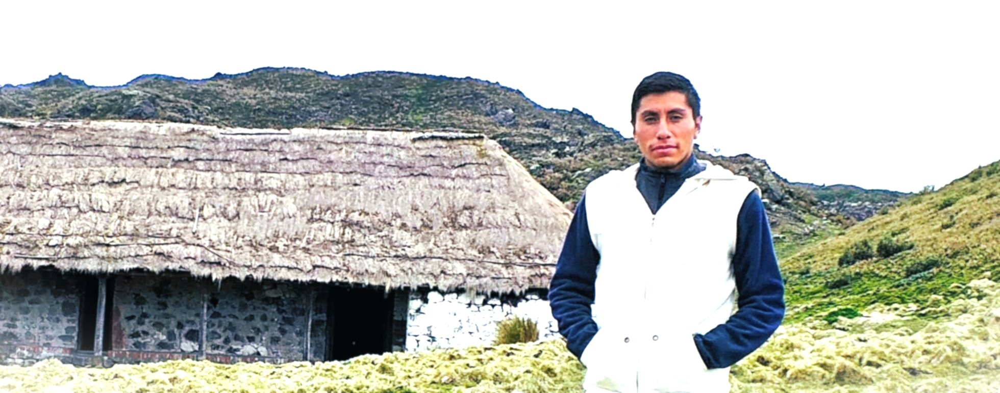
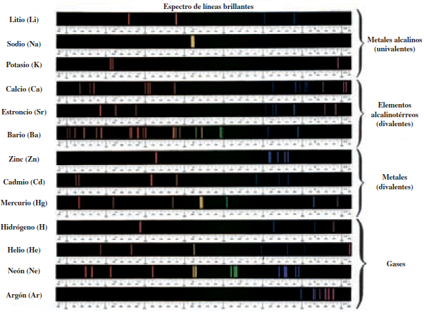
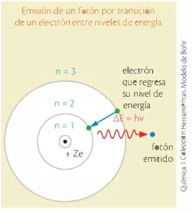
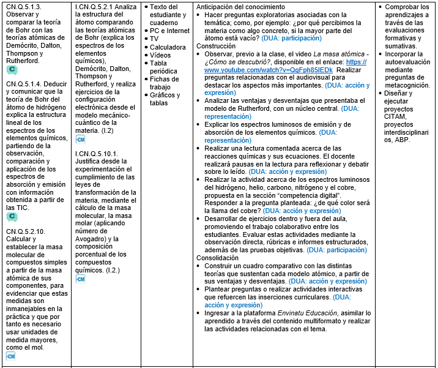

Teoría de Bohr del átomo de hidrógeno
CN.Q.5.1.4. Deducir y comunicar que la teoría de Bohr del átomo de hidrógeno explica la estructura lineal de los espectros de los elementos químicos, partiendo de la observación, comparación y aplicación de los espectros de absorción y emisión con información obtenida a partir de las TIC.

Piensa un momento en un código secreto hecho de luz. Cuando un átomo se excita, emite colores muy específicos; cuando absorbe energía, “roba” exactamente ciertas franjas del espectro. A simple vista, parecen líneas de colores en un gráfico, pero detrás de esas líneas hay una estructura profunda: cada una corresponde a un salto energético de los electrones.
Si observamos los espectros de distintos elementos con herramientas digitales —desde simuladores interactivos hasta espectroscopios virtuales— aparece un patrón intrigante: no hay arcoíris completos, sino líneas perfectamente ordenadas. Es como si la naturaleza utilizara un sistema de barras para decirnos quién es cada elemento.
¿Por qué un átomo emite exactamente esas líneas y no otras? ¿Qué hace que el hidrógeno, el helio o el sodio tengan “firmas de luz” tan distintas? Estas preguntas llevaron a Bohr a proponer que los electrones no podían ocupar cualquier lugar, sino niveles de energía discretos. Esa idea permitió explicar, con precisión sorprendente, la estructura lineal de los espectros.
Al iniciar esta exploración, usaremos recursos digitales para observar y comparar espectros reales, reconocer patrones y descubrir cómo la teoría de Bohr transforma simples líneas de colores en evidencia directa de la organización del átomo.
El modelo atómico de Rutherford, con un núcleo central, presentaba grandes ventajas y también desventajas, entre las que estaba explicar cómo los electrones que giraban alrededor del núcleo atómico conservaban un eterno movimiento, y por qué no caían hacia el núcleo debido a la atracción entre cargas eléctricas opuestas. Para muchos científicos, el sistema electrónico que presentaba este modelo atómico carecía de estabilidad y solo explicaba la estructura del átomo de hidrógeno, pero no de átomos más complejos.
Para esto usaría los postulados del físico alemán Max Planck (1858-1947), quien afirmaba que la materia estaba en equilibrio con la energía, por lo tanto, podía absorberla o emitirla en paquetes de energía llamados cuantos.

El espectro de emisión es el complemento del espectro de absorción.

Laboratorio casero. Humedece la punta de un tenedor y pega en ella unos cristales de sal (cloruro de sodio). Lleva los cristales a la llama de la cocina y observa el color que toma la llama debido a que el sodio al calentarse emite un espectro luminoso.
Al analizar los espectros de absorción y emisión y relacionarlos con la teoría de Bohr, comprobaste que el átomo no es un continuo de posibilidades, sino un sistema regido por niveles de energía cuantizados. Cada línea en un espectro es una prueba experimental de ese orden oculto. Lo que parecía un arcoíris fragmentado se convierte en una cartografía energética del hidrógeno y, por extensión, de otros elementos.
Las nuevas tecnologías permiten observar estos fenómenos con una claridad que antes era impensable. Ver los espectros aparecer en pantalla y reconocer su estructura es una forma directa de conectar la teoría con la evidencia. Esa unión entre observación y explicación es el corazón del pensamiento científico.
A medida que avances, descubrirás que los espectros son más que un tema de clase: son herramientas que usamos para estudiar estrellas lejanas, analizar materiales, e incluso descifrar la composición de atmósferas extraterrestres. Comprender por qué Bohr pudo explicar esas líneas es un primer paso para entender cómo el universo revela su estructura a través de la luz.
